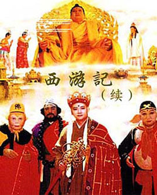
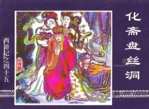

您现在的位置是：首页>慢生活>日记
《西游记》的改编，为什么一直这么火？
发布时间：2017-05-21编辑：Imitater


转载、《北京晚报》
近年来，《西游记》成为了大热IP，各家都想从中分一杯羹。《大圣归来》、《大话西游3》、《西游伏妖篇》、《西游降魔篇》、《西游记之大闹天宫》、《西游记之三打白骨精》、《西游记之女儿国》……一直到现在这部《悟空传》，有人曾做过一个统计，从1926年的《孙行者大战金钱豹》到现在为止，全世界至少拍摄了100多部跟《西游记》有关的影视剧。
追根溯源，中国第一部西游题材影片是1926年天一电影公司出品、胡蝶主演的默片《孙行者大战金钱豹》。这部影片的摄影正是香港邵氏的掌门人、107岁高龄去世的邵逸夫，导演则是他的哥哥邵醉翁。
翌年，也就是1927年2月2日，上海影戏公司出品了《盘丝洞》。上海首映，地点为北海路上有“国片之宫”美称的中央大戏院。1929年1月，在挪威放映，片名翻译为《蜘蛛精》，也是第一部在当地放映的中国电影。2014年4月15日，挪威国家图书馆把中国经典默片《盘丝洞》的电影拷贝送给中国，给了中国老电影的影迷一个大大的惊喜。
现存的中国早期无声电影目前不超过10部，而《盘丝洞》是现存的最早的著名片种——神怪片的样本。但这种怪力乱神的类型让当局看不下去，于1930年给禁了。在那个怪力乱神的黄金时代，光西游电影，就有明星公司出品的《车迟国唐僧斗法》，天一公司的《女儿国》、《铁扇公主》、《莲花洞》，大中国的《黑风山》、《无底洞》、《红孩儿》、《闹天宫》，长城公司的《火焰山》，合群公司的《猪八戒大闹流沙河》等等，和现在的情况很相似，各大电影公司都在争抢《西游记》这个大IP。
《盘丝洞》中衣着暴露的女演员虽然现在看来无关痛痒，但在民风未开的上世纪20年代，那绝对属于有伤风化。1967年，香港邵氏的何梦华重拍《盘丝洞》，盘丝洞的布置，充满成人趣味。到了周星驰的《大话西游》，《盘丝洞》里隐隐约约的暗示，还留了一点蛛丝马迹留待影迷追踪其源头。听说程小东也拍了一部《盘丝洞》，还未公映，就不知道能否再现当年《倩女幽魂》的辉煌了。
说到邵氏，当时很多邵氏的导演都对《西游》题材感兴趣，其中有一位，就是爱血浆暴力美学胜于一切的张彻。可惜1991年，他拍摄的《西行平妖》，几乎毁了他一辈子的清誉。如果这片子是1967年拍的似还情有可原，可是，那是1991年啊，吴宇森都已经拍了《英雄本色》，徐克都已经拍了《倩女幽魂》，这位老前辈还停留在六七十年代的邵氏，也实在是太过恋旧了吧。《西行平妖》在剧情和武打设计方面，也实在有够可以吐槽的，孙悟空不拿称手的金箍棒和红孩儿打，居然用的是剑，可能这是所有《西游记》改编影视剧中孙悟空唯一一次耍剑吧？还有唐僧，居然会法术，那还要四大弟子保护做什么？
中国人爱《西游记》那是天经地义，现在西游之热，还走出了国门，风靡海外。处于儒家文化圈、中华辐射圈里的日韩，诞生出《七龙珠》和女版唐僧都不在话下，连那些高鼻深目的洋老外，看到《西游记》居然也忍不住想要翻拍，可见其魅力有多大。
2015年的美剧《荒原》里，吴彦祖饰演的战士Sunny一路护送着身负重任的少年前往极乐净土，这就是孙悟空对唐僧的人设。另一部中美合拍的《敢问路在何方》是派拉蒙影业投资的魔幻巨片，那就是要叫板《指环王》了，假使如果能够拍出高口碑的佳片，《西游记》在西方的影响力肯定会再上一个台阶。
其他三大名著加一块，改编的影视剧数量也没法和《西游记》比，为啥大家这么爱看《西游记》？
有一次陈村谈到《西游记》，说《西游记》和游戏特别搭，就是一关一关打怪。虽然这只是表象，却也道出了部分事实。
正是《西游记》的半开放性质，给了后来的创作者以发挥的可能性。《三国演义》这样的历史演义小说，故事是线性的，不可逆，而《西游记》里，似乎师徒五人始终在一个跳不出的人生迷宫之中左冲右突，遇到的各种妖魔鬼怪似曾相识，似乎可以无限地往里加故事。再加上，《西游记》里还有难得的喜剧元素，而《红楼梦》、《水浒传》、《三国演义》都是悲剧，英雄末路逼上梁山等等，各种悲情，唯独《西游记》，拥有着好莱坞式大团圆结局，还有一头猪在里面专门负责搞笑，简直绝了。
原来只在《七龙珠》和上海美影厂动画片中展现喜剧一面的《西游记》，在经由周星驰作品大放异彩之后，它在成人世界中也广受肯定，确实是难得的IP。只是，在《大话西游》之后，即使是周星驰本尊拍的《西游》系列，也难再登上当年的巅峰，也不免是《西游记》改编中的一大遗憾。
关键字词 西游记 经典 改编